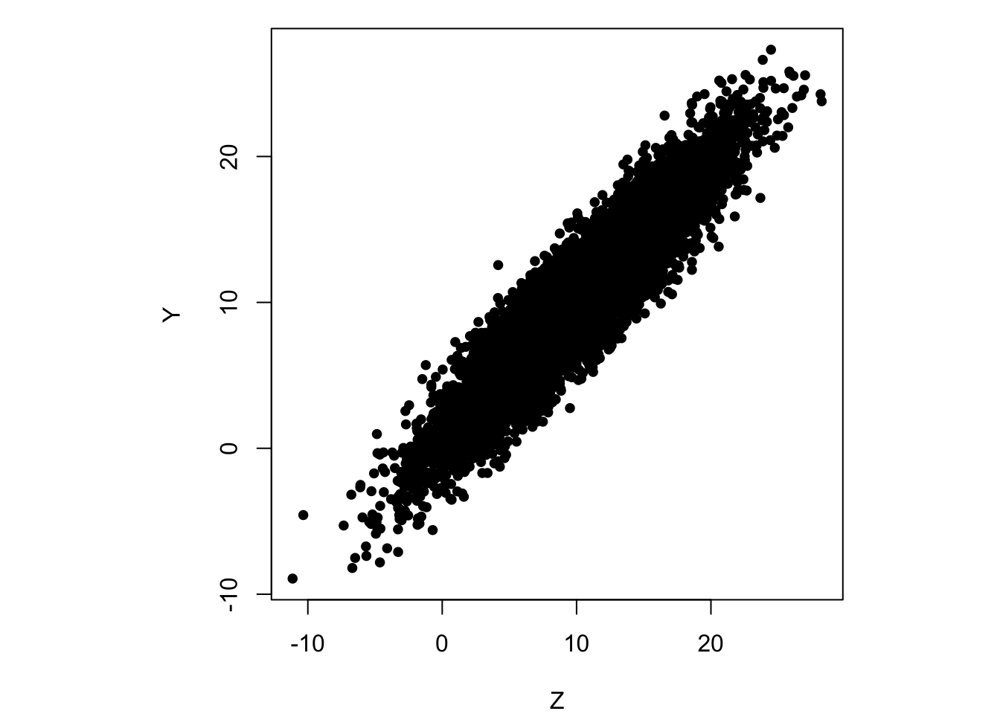
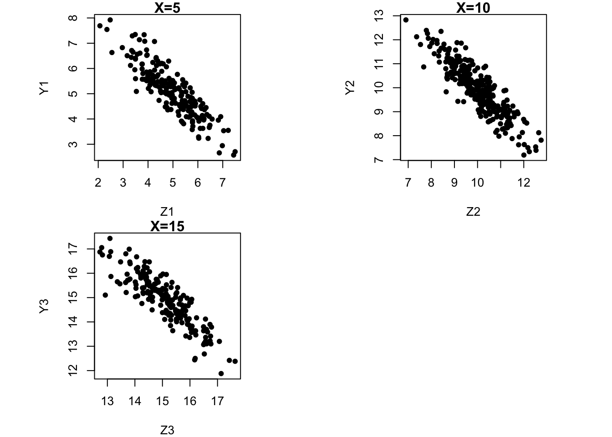
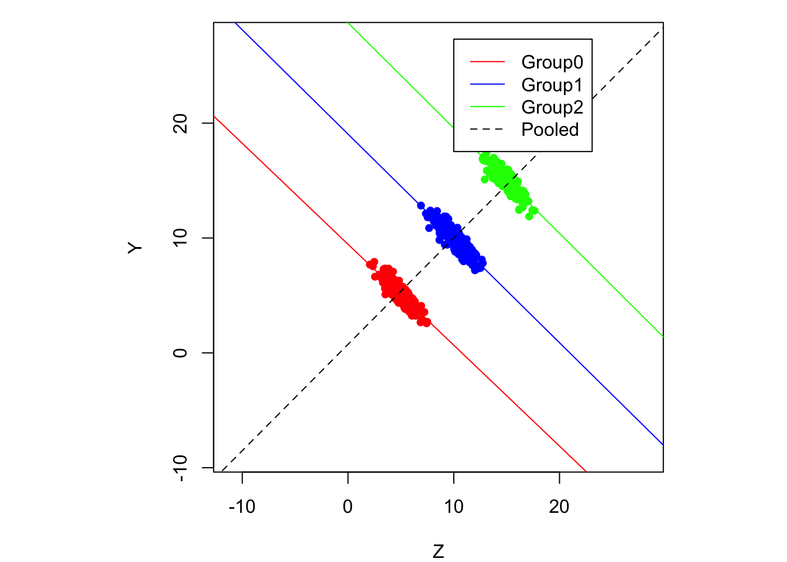

Causal Inference Course Notes
2023-05-02
Chapter 1 Introduction
We begin with a review of the notations and some principles of probability calculations that will be used throughout this notes. Consider there are three random variables: \(X, Y\) and \(Z\). Ultimately we will collect data \(\left\{\left(x_i, y_i, z_i\right), i=1, \ldots, n\right\}\) which are observed values of the variables. A probabilistic model for the data comprises a joint density \(f_{X,Y,Z} (x,y,z)\), or a joint mass function for discrete variables, which represents how the data are generated. Notice that in the following calculations we are using density functions for ease of notation, but it shall follows the same rule for discrete or mixed cases. All we need is to substitute the integrals into summation.
1.1 Basic Probability Calculations
If we have a joint model on hand, that automatically specifies the marginal distributions, \(f_X(x), f_Y(y) \text { and } f_Z(z)\), and conditional distributions, for example, \(f_{Y \mid X, Z}(y \mid x, z) \quad f_{Y, Z \mid X}(y, z \mid x)\).
The marginal distributions can be obtained via integrating the joing density with respect to other variables. For example, suppose we want to obtain the marginal density for \(Y\), \(f_Y(y)\), the calculation shall be:
\[ f_Y(y) = \iint f_{X, Y, Z}(x, y, z) d x d z \]
The conditional density can be calculated as a ratio between joint density of the target and the conditions, and the density of the conditions itself. Say we want to calculate the conditional density of \(Y\), given \(X=x, Z=z\), provided that \(f_{X,Z}(x,z) > 0\):
\[ f_{Y|X,Z}(y) = \frac{f_{X,Y,Z}(x,y,z)}{f_{X,Z}(x,z) } = \frac{f_{X,Y,Z}(x,y,z)}{\int f_{X,Z}(x,t,z) dt}\]
Notice that the joint density can be factorized as a product of conditional densities and a marginal density, and this factorization can be done in any orderings. This is referred to as the chain rule factorization.
\[ f_{X, Y, Z}(x, y, z)=f_X(x) f_{Z \mid X}(z \mid x) f_{Y \mid X, Z}(y \mid x, z) \] \[ f_{X, Y, Z}(x, y, z)=f_Z(z) f_{Y \mid Z}(y \mid z) f_{X \mid Y, Z}(x \mid y, z) \]
Plug it back to the integral obtaining marginal density, we see that there is no unique way of calculating a probability density function:
\[ \begin{aligned} f_Y(y) & =\iint f_{X, Y, Z}(x, y, z) d x d z \\ & =\iint f_{Y \mid X, Z}(y \mid x, z) f_{Z \mid X}(z \mid x) f_X(x) d z d x \\ & \equiv \iint f_{Y \mid X, Z}(y \mid x, z) f_{X \mid Z}(x \mid z) f_Z(z) d x d z \end{aligned} \]
1.2 Expectations
We may calculate expectations under the joint probability model:
\[ \mathbb{E}_Y[Y] = \int yf_Y(y) dy\] With the use of marginalization technique and chain rule factorization, this calculation can be written in various formats:
\[ \begin{aligned} \mathbb{E}_Y[Y] & =\int y f_Y(y) d y \\ & \equiv \int y\left\{\iint f_{X, Y, Z}(x, y, z) d x d z\right\} d y \\ & \equiv \int y\left\{\iint f_{Y \mid X, Z}(y \mid x, z) f_{Z \mid X}(z \mid x) f_X(x) d x d z\right\} d y \\ & \equiv \iint\left\{\int y f_{Y \mid X, Z}(y \mid x, z) d y\right\} f_{Z \mid X}(z \mid x) f_X(x) d x d z \end{aligned} \]
We can denote \(\int y f_{Y \mid X, Z}(y \mid x, z) d y\) as the conditional expectation \(\mathbb{E}_{Y}[Y|X=x,Z=z]\). Therefore, plugging back into calculation of \(\mathbb{E}_Y(Y)\), we have
\[ \begin{aligned} \mathbb{E}_Y[Y] & =\int y f_Y(y) d y \\ & \equiv \iint\left\{\int y f_{Y \mid X, Z}(y \mid x, z) d y\right\} f_{Z \mid X}(z \mid x) f_X(x) d x d z\\ & \equiv \iint \mathbb{E}_{Y|X,Z}[Y|X=x,Z=z] f_{Z \mid X}(z \mid x) f_X(x) d x dz \\ & \equiv \mathbb{E}_{X,Z}[\mathbb{E}_{Y|X,Z}[Y|X,Z]] \end{aligned} \]
In short, we have \(\mathbb{E}_Y[Y]=\mathbb{E}_{X, Z}\left[\mathbb{E}_{Y \mid X, Z}[Y \mid X, Z]\right]\), which is known as iterated expectation.
Here we would like give a clarification regarding the notations of conditional expectation. The quantity \(\mathbb{E}_{Y|X,Z}[Y|X=x,Z=z]\) is a function of two values \((x,z)\), and therefore is non-random. However, \(\mathbb{E}_{Y|X,Z}[Y|X,Z]\) is a function of \((X,Z)\), and is therefore a random variable.
The conditional expectation calculation can be also viewed as the expectation calculation under the joint density, with the known conditions being treated as a degenerate random variable. Suppose we denote \(\mathbb{I}_{\{z\}}(v)\) as the indicator function, i.e., \(\mathbb{I}_{\{z\}}(v)=1\) if \(v=z\) and 0 otherwise. Then we could state the conditional expectation \(\mathbb{E}_{Y|Z}[Y|Z=z]\) as follows:
\[ \begin{aligned} \mathbb{E}_{Y \mid Z}[Y \mid Z=z] & =\int y f_{Y \mid X, Z}(y \mid z) d y \\ & =\iint y f_{Y \mid X, Z}(y \mid x, z) f_{X \mid Z}(x \mid z) d y d x \\ & =\iiint \mathbb{I}_{\{z\}}(v) y f_{Y \mid X, Z}(y \mid x, v) f_{X \mid Z}(x \mid v) d y d x d v\\ & =\iiint y f_{Y \mid X, Z}(y \mid x, v) f_{X \mid Z}(x \mid v) f_V(v) d y d x d v \\ & =\iint \{ \int y f_{Y \mid X, Z}(y \mid x, v) dy \} f_{X \mid Z}(x \mid v) f_V(v) d x d v \\ & = \mathbb{E}_{X,V}[\mathbb{E}_{Y|X,V}[Y|X,V]] \end{aligned} \]
where \(V\) is the degenerate random variable with
\[ f_V(v)= \mathbb{P}[V=v]=\mathbb{I}_{\{z\}}(v) = \begin{cases}1 & V=z \\ 0 & V \neq z\end{cases}\]
1.3 Independence
Two random variables \(X, Z\) are said to be independent, denoted as \(X \perp \!\!\! \perp Z\), if and only if \(f_{X, Z}(x, z)=f_X(x) f_Z(z)\), for all \((x, z) \in \mathbb{R}^2\). Equivalently, we can define independence by conditional densities: \(f_{X \mid Z}(x \mid z)=f_X(x) \quad \forall(x, z) \text { s.t. } f_Z(z)>0\), or \(f_{Z \mid X}(z \mid x)=f_Z(z) \quad \forall(x, z) \text { s.t. } f_X(x)>0\).
The idea remains the same when it comes to three variables. We say \(X,Y,Z\) are independent if \(f_{X, Y, Z}(x, y, z)=f_X(x) f_Y(y) f_Z(z) \quad \forall(x, y, z) \in \mathbb{R}^3\). We can also consider conditional independence structure, denoted as \(Y \perp \!\!\! \perp Z \mid X\), if and only if \[ f_{Y, Z \mid X}(y, z \mid x)=f_{Z \mid X}(z \mid x) f_{Y \mid X}(y \mid x) \] for all \((x, z, y) \in \mathbb{R}^3\) where the conditional densities are well-defined.
An important result is that, a degenerate random variable shall be independent to all other random variables, under certain support. Suppose we have the degenerate random variable \(V\) such that \(\mathbb{P}[V=v_0]=1\). Then if we consider the joint distribution of \(X\) and \(V\), then for arbitrary \(x\) and some function \(g(x,v)\), \[ f_{X, V}(x, v)= \left\{\begin{array}{cc} g\left(x, v_0\right) & x \in \mathbb{R}, V=v_0 \\ 0 & x \in \mathbb{R}, V \neq v_0 \end{array}\right.\]
Therefore, marginally, \(f(x) = g(x,v_0)\). which must be a density in \(x\). Hence for all \((x, v) \in \mathbb{R}^2\), \(f_{X, V}(x, v)=f_X(x) f_V(v)\), and hence \(X\) and \(V\) are independent.
Under the assumption of independence between \(X\) and \(Z\), we could simplify the calculation of \(\mathbb{E}_{Y|Z}[Y|Z=z]\) by substituting \(f_{X|Z}(x|z)\) into \(f_{X}(x)\):
\[ \begin{aligned} \mathbb{E}_{Y \mid Z}[Y \mid Z=z] & =\iint y f_{Y \mid X, Z}(y \mid x, z) f_{X \mid Z}(x \mid z) d y d x \\ & \equiv \iint y f_{Y \mid X, Z}(y \mid x, z) f_X(x) d y d x \quad \text { as } X \perp \!\!\! \perp Z \\ & \equiv \mathbb{E}_X\left[\mathbb{E}_{Y \mid X, Z}[Y \mid X, z]\right] \end{aligned} \]
Hence we could calculate \(\mathbb{E}_{Y|Z}[Y|Z=z]\) by the following procedures: first fix \(Z=z\) independently of \(X\), then computing for each fixed \(x\), \(\mathbb{E}_{Y \mid X, Z}[Y \mid X=x, Z=z]=\mu(x, z)\). Finally we could averaging \(\mu(x, z)\) over the distribution of \(f_X(x)\) to obtain \(\mathbb{E}[\mu(x, z)]\), which is our target conditional expectation. The \(\mu(x,z)\) could be viewed as a mean model. For example, in a regression context, we could set \(\mu(x,z; \beta, \psi) = \mathbb{E}_{Y \mid X, Z}[Y \mid X=x, Z=z]=\beta_0+\beta_1 x+\psi_0 z\), or \(\mu(x,z; \beta, \psi) = \mathbb{E}_{Y \mid X, Z}[Y \mid X=x, Z=z]=\beta_0+\beta_1 x+\psi_0 z+\psi_1 \mathrm{xz}\), for some parameters \(\beta\), \(\psi\).
1.4 Simpson’s Paradox: Discrete Version
Suppose we have binary variables \(X, Y, Z\) on the support of \(\{0,1\}^3\), and both \(\operatorname{Pr}[Z=0]>0 \quad \text { and } \quad \operatorname{Pr}[Z=1]>0\).
We have for \((y, z) \in\{0,1\}^2\) \[ \begin{aligned} \operatorname{Pr}[Y=y \mid Z=z] &= \sum_{x=0}^1 \operatorname{Pr}[Y=y \mid X=x, Z=z] \operatorname{Pr}[X=x \mid Z=z] \\ &= \operatorname{Pr}[Y=y \mid X=0, Z=z] \operatorname{Pr}[X=0 \mid Z=z] +\operatorname{Pr}[Y=y \mid X=1, Z=z] \operatorname{Pr}[X=1 \mid Z=z] \end{aligned} \]
Notice that in general, this does not equal to
\[ \begin{aligned} \operatorname{Pr}[Y & =y \mid X=0, Z=z] \operatorname{Pr}[X=0] +\operatorname{Pr}[Y=y \mid X=1, Z=z] \operatorname{Pr}[X=1] \end{aligned} \]
Ignoring this fact will lead to misinterpretation of probability models. We will illustrate the Simpson’s paradox here as an example. Suppose we wish to allocate two treatments, A and B, with \(Z=0\) denoting treatment A and \(Z=1\) denoting treatment B, to two groups, \(X=0\) for group 0 and \(X=1\) for group 1, respectively. Their treatment outcomes are coded into \(Y\), where \(Y=1\) is denoted as cured and \(Y=0\) otherwise. We can breakdown the treatment effect into two \(2 \times 2\) contigency tables according to patient groups (\(X\)):
| X=0 | Y=0 | Y=1 |
|---|---|---|
| Z=0 | 36 | 234 |
| Z=1 | 6 | 81 |
| X=1 | Y=0 | Y=1 |
|---|---|---|
| Z=0 | 25 | 55 |
| Z=1 | 71 | 192 |
We can estimate the cure rates in two treatment groups:
| Cure Rate | Z=0 | Z=1 |
|---|---|---|
| Group 0 (X=0) | \(\frac{234}{234+36} = 0.87\) | \(\frac{81}{81+6} = 0.93\) |
| Group 1 (X=1) | \(\frac{55}{55+25} = 0.69\) | \(\frac{192}{192+71} = 0.73\) |
We can see that in each of the two patient groups separately, treatment B beats treatment A.
However if we collapse the data over \(X\), we have:
| Y=0 | Y=1 | |
|---|---|---|
| Z=0 | 61 | 289 |
| Z=1 | 77 | 273 |
with cure rate for treatment A being \(\frac{289}{289+61} = 0.83\) and cure rate for treatment B being \(\frac{273}{273+77} = 0.78\). That is, in pooled data, treatment A beats from treatment A, which contradicts the conclusion we have when we analyze the data under patients groups separately. This is referred to as the Simpson’s paradox.
The reason behind is that
\[ \begin{aligned} \operatorname{Pr}[Y=1 \mid Z=1] &= \operatorname{Pr}[Y=1 \mid X=0, Z=1] \operatorname{Pr}[X=0 \mid Z=1] +\operatorname{Pr}[Y=1 \mid X=1, Z=1] \operatorname{Pr}[X=1 \mid Z=1] \\ &= 0.93 (1-w_1) + 0.73 w_1 = 0.78 \end{aligned} \]
where in the above calculation, we substitute \(\operatorname{Pr}[Y=1 \mid X=0, Z=1]\) and \(\operatorname{Pr}[Y=1 \mid X=1, Z=1]\) using our estimated cure rates. We can see that the cure rate of treatment B among pooled data is the weighted sum of cure rate under each treatment group, with weight
\[ w_1 = \widehat{\operatorname{Pr}}[X=1 \mid Z=1]=\frac{263}{263+87} = 0.75 \]
Similarly, we could perform such calculation for treatment A:
\[ \begin{aligned} \operatorname{Pr}[Y=1 \mid Z=0] &= \operatorname{Pr}[Y=1 \mid X=0, Z=0] \operatorname{Pr}[X=0 \mid Z=0] +\operatorname{Pr}[Y=1 \mid X=1, Z=0] \operatorname{Pr}[X=1 \mid Z=0] \\ &= 0.87 (1-w_0) + 0.69 w_0 = 0.83 \end{aligned} \]
with weight \(w_0 := \widehat{\operatorname{Pr}}[X=1 \mid Z=0]=\frac{80}{270+80} = 0.22\)
The weights \(w_1 := \operatorname{Pr}[X=1 \mid Z=1]\) and \(\operatorname{Pr}[X=1 \mid Z=0]\) are substantially different, representing (in the joint distribution rather than the data) dependence between \(X\) and \(Z\). Hence there is an imbalance between the two treatments when considering the representation of the two groups of individuals: as the probability of cure is different for the two groups, this imbalance affects the conclusions from the pooled data. Therefore, it is important to consider whether we wish to report a comparison conditional on \(x\)
\[ \operatorname{Pr}[Y=1 \mid X=x, Z=1] \quad \text { vs } \operatorname{Pr}[Y=1 \mid X=x, Z=0] \]
or a marginal comparison
\[ \operatorname{Pr}[Y=1 \mid Z=1] \quad \text { vs } \quad \operatorname{Pr}[Y=1 \mid Z=0] \]
1.5 Simpson’s Paradox: Continuous Version
The Simpson’s paradox is not limited to discrete random variables, as it could be extended to continuous random variables as well. Suppose we have \((X,Y,Z)\) following a joint normal distribution:
\[ \left(\begin{array}{l} X \\ Y \\ Z \end{array}\right) \sim \operatorname{Normal}_3(\mu, \Sigma) \]
Then we could construct \(\{ (x_i,y_i,z_i \}\) as follows: we construct marginal density for \(X:= \sim \operatorname{Normal}\left(\mu_X, \sigma_X^2\right)\). Then we could construct \((Y, Z)\) conditional on \(X=X\) :
\[ (Y, Z) \mid X=\mathrm{x} \sim \operatorname{Normal}_2\left(\left(\begin{array}{l} x \\ x \end{array}\right),\left(\begin{array}{cc} 1.0 & -0.9 \\ -0.9 & 1.0 \end{array}\right)\right) \] This two-step procedure could recover the joint density of \((X,Y,Z)\) by the previously mentioned chain rule factorization:
\[ f_{X,Y,Z}(x,y,z) = f_{X}(x) f_{(Y,Z)|X=x}(y,z) \]
Now we are about to state a few probability results that could help us recover the details of joint probability model, before diving into illustrating the Simpson’s paradox. Suppose we have
\[ \left[\begin{array}{c} X \\ Y \\ Z \end{array}\right] \sim \operatorname{Normal}_3\left(\left[\begin{array}{l} \mu_X \\ \mu_Y \\ \mu_Z \end{array}\right],\left[\begin{array}{ccc} \sigma_X^2 & \sigma_{X Y} & \sigma_{X Z} \\ \sigma_{X Y} & \sigma_Y^2 & \sigma_{Y Z} \\ \sigma_{X Z} & \sigma_{Y Z} & \sigma_Z^2 \end{array}\right]\right) \]
Then by the general result for the multivariate normal distribution
\[ \left[\begin{array}{l} Y \\ Z \end{array}\right] \mid X=x \sim \operatorname{Normal}_2\left(\left[\begin{array}{l} \mu_X \\ \mu_X \end{array}\right]+\frac{1}{\sigma_X^2}\left[\begin{array}{l} \sigma_{X Y} \\ \sigma_{X Z} \end{array}\right]\left(x-\mu_X\right), \Sigma_{Y Z . X}\right) \]
\(\Sigma_{Y Z \cdot X}\) is the variance covariance of \((Y,Z)|X=x\), and we had assigned this matrix within our data generating mechanism with \(\rho :=\operatorname{Corr}[Y, Z \mid X=X]=\rho_{Y Z . X}\), the partial correlation between \(Y\) and \(Z\) given \(X=x\).
\[ \Sigma_{Y Z \cdot X}=\left[\begin{array}{cc} \sigma_Y^2 & \sigma_{Y Z} \\ \sigma_{Y Z} & \sigma_Z^2 \end{array}\right]-\frac{1}{\sigma_X^2}\left[\begin{array}{c} \sigma_{X Y} \\ \sigma_{X Z} \end{array}\right]\left[\begin{array}{ll} \sigma_{X Y} & \sigma_{X Z} \end{array}\right] = \left[\begin{array}{ll} 1 & \rho \\ \rho & 1 \end{array}\right] \]
Comparing the data-generating mechanism and the probability model derived above, we can obtain the following parameters for our joint probability model: \(\sigma_{X Y}=\sigma_{X Z}=\sigma_X^2\), \(\sigma_Y^2 =1+\frac{\sigma_{X Y}^2}{\sigma_X^2}=1+\sigma_X^2\), \(\sigma_Z^2 =1+\sigma_X^2\), \(\sigma_{Y Z} =\rho+\frac{\sigma_{X Y} \sigma_{X Z}}{\sigma_X^2}=\rho+\sigma_X^2\)
Therefore, we could have the conditional probability of \(Y|X=x, Z=z\), as this can be directly derived from \(Y,Z|X=x\) using conditional probability calculation formulated above.
\[ Y \mid X=x, Z=z \sim \operatorname{Normal}\left(\mathrm{x}+\rho(z-x),\left(1-\rho^2\right)\right) \] thus we have
\[ \mathbb{E}[Y \mid X=x, Z=z]=x+\rho(z-x)=\rho z+(1-\rho) x \]
that is, the conditional expectation of \(Y\) given \(X=x, Z=z\), is a linear combination of \(z\) and \(x\) with respect to weights \(\rho\) and \(1-\rho\). This mean model is unchanged irrespective of any assumption about the \((X,Z)\) distribution.
Also we have
\[ Z \mid X=\mathrm{x} \sim \operatorname{Normal}(\mathrm{x}, 1) \]
and so
\[ \begin{aligned} f_{X \mid Z}(x \mid z) & \propto f_{Z \mid X}(z \mid x) f_X(x) \\ & \equiv \operatorname{Normal}\left(\frac{z+\mu_X / \sigma_X^2}{1+1 / \sigma_X^2}, \frac{1}{1+1 / \sigma_X^2}\right) \end{aligned} \]
Hence
\[ \mathbb{E}_{X|Z}[X|Z=z] = \frac{z+\mu_X / \sigma_X^2}{1+1 / \sigma_X^2} \]
Using the above results, we could calculate the conditional expectation with given \(Z=z\) only:
\[ \begin{aligned} \mathbb{E}_{Y \mid Z}[Y \mid Z=z] & =\mathbb{E}_{X \mid Z}\left[\mathbb{E}_{Y \mid X, Z}[Y \mid X, Z=z] \mid Z=z\right] \\ & =\mathbb{E}_{X \mid Z}[\rho Z+(1-\rho) X \mid Z=z] \\ & =\rho z+(1-\rho) \mathbb{E}_{X \mid Z}[X \mid Z=z] \\ & =\rho z+(1-\rho) \frac{z+\mu_X / \sigma_X^2}{1+1 / \sigma_X^2} \\ & =\frac{(1-\rho) \mu_X}{\sigma_X^2+1}+\left(\rho+(1-\rho) \frac{\sigma_X^2}{\sigma_X^2+1}\right) z \end{aligned} \]
In this system, \(X\) and \(Z\) are not independent, as \(\sigma_{XZ} = \sigma_X^{2} > 0\). So the marginal effect of \(Y\) of changing \(Z\) is measured by the coefficient of \(z\) in \(\mathbb{E}_{Y \mid Z}[Y \mid Z=z]\). However, assuming the \(X\) and \(Z\) being independent, then \(\mathbb{E}_{Y \mid Z}[Y \mid Z=z]\) can be calculated by \(\mathbb{E}_{Y \mid X, Z}[Y \mid X=x, Z=z]\), and marginal effect of \(Y\) under changing \(Z\) should be the measured by the coefficient \(\rho\).
\[ \rho+(1-\rho) \frac{\sigma_X^2}{\sigma_X^2+1} \]
We could simulate a dataset with 10,000 data, according to our specified probability models. Plotting the marginal scatterplot between \(Y\) and \(Z\), we could see that marginally speaking, \(Y\) and \(Z\) are positively correlated.
library(MASS)
set.seed(2111)
n<-10000 #sample size
X<-rnorm(n,10,5)# Generate X
Sig.YZ<-matrix(c(1,-0.9,-0.9,1),2,2)
# variance covariance matrix for (Y,Z) conditional distribution
YZ<-mvrnorm(n,mu=c(0,0),Sigma=Sig.YZ) #Generate the Y,Z variables
Y<-X+YZ[,1]
Z<-X+YZ[,2] #Change the mean according to X
par(mar=c(4,4,1,0),pty='s')#Set up the plotting margins
plot(Z,Y,pch=19,cex=0.8)
However, condition on \(X\) being restricted to neighbouring values of 5, 10, 15, respectively, \(Y\) and \(Z\) are negatively correlated.
Y1<-Y[X>4.8&X<5.2];Z1<-Z[X>4.8&X<5.2];#Firstsubsetanalysis
Y2<-Y[X>9.8&X<10.2];Z2<-Z[X>9.8&X<10.2];#Secondsubsetanalysis
Y3<-Y[X>14.8&X<15.2];Z3<-Z[X>14.8&X<15.2];#Thirdsubsetanalysis
par(mar=c(4,2,1,0),pty='s',mfrow=c(2,2))#Setuptheplottingmargins
plot(Z1,Y1,pch=19,cex=0.8, main="X=5")
plot(Z2,Y2,pch=19,cex=0.8, main="X=10")
plot(Z3,Y3,pch=19,cex=0.8, main="X=15")
We could also calculate \(\mathbb{E}_{Y|Z,X}[Y|Z=z, X=5]\), \(\mathbb{E}_{Y|Z,X}[Y|Z=z, X=10]\), \(\mathbb{E}_{Y|Z,X}[Y|Z=z, X=15]\), and \(\mathbb{E}_{Y|Z}[Y|Z=z]\) to verify our calculation result.
We had previously showed that, conditional on \(X=x\) and \(Z=z\),
\[ \mathbb{E}[Y|X=x, Z=z] = \rho z + (1-\rho)x = -0.9z + 1.9x\] Hence in the fitted regression model under data conditioned on \(X=x\), the intercept shall be \(1.9x\) and the slope shall be -0.9, which fits our fitted linear regression model.
coef(summary(lm(Y1~Z1)))## Estimate Std. Error t value Pr(>|t|)
## (Intercept) 9.4574859 0.17528623 53.95453 1.444312e-119
## Z1 -0.8788471 0.03460964 -25.39313 6.805696e-64coef(summary(lm(Y2~Z2)))## Estimate Std. Error t value Pr(>|t|)
## (Intercept) 19.0485792 0.27067056 70.37551 4.282111e-193
## Z2 -0.9082673 0.02685246 -33.82436 3.177163e-106coef(summary(lm(Y3~Z3)))## Estimate Std. Error t value Pr(>|t|)
## (Intercept) 28.7386850 0.57413972 50.05521 9.408283e-112
## Z3 -0.9170635 0.03791339 -24.18838 4.722858e-60We had previously showed that,
\[ \mathbb{E}_{Y \mid Z}[Y \mid Z=z] =\frac{(1-\rho) \mu_X}{\sigma_X^2+1}+\left(\rho+(1-\rho) \frac{\sigma_X^2}{\sigma_X^2+1}\right) z \]
Therefore with \(\mu_x=10\), \(\sigma_X^{2}=25\), \(\rho=-0.9\), the fitted regression coefficients should be somewhere close to 0.92 for the slope, and 0.73 for the slope. Combined together, we could see that separately speaking conditioned on whatever \(X=x\), an increase in \(z\) could have an decreasing effect on \(Y\), but the marginal effect of increasing \(z\) shall decrease the expected outcome of \(Y\).
coef(summary(lm(Y~Z)))#Pooledregression## Estimate Std. Error t value Pr(>|t|)
## (Intercept) 0.738979 0.042213372 17.5058 1.311992e-67
## Z 0.925472 0.003743085 247.2485 0.000000e+00par(mar=c(4,4,1,0),pty='s')
plot(Z,Y,type='n')
points(Z1,Y1,pch=19,cex=0.8,col='red')
points(Z2,Y2,pch=19,cex=0.8,col='blue')
points(Z3,Y3,pch=19,cex=0.8,col='green')
abline(lm(Y~Z),lty=2)
abline(lm(Y1~Z1),col='red')
abline(lm(Y2~Z2),col='blue')
abline(lm(Y3~Z3),col='green')
legend(10,max(Y),c('Group0','Group1','Group2','Pooled'), col=c('red','blue','green','black'),lty=c(1,1,1,2))